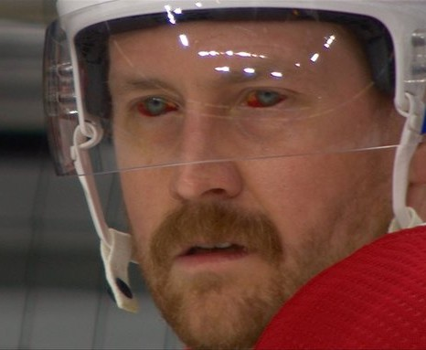

Carey Price est le gardien étoile des Canadiens de Montréal depuis qu'il à été repêché 5e au total dans le repechage de 2005. Malgré que les fans mettent facilement la faute sur lui, il reste un des meilleurs gardiens de la ligue national.
Jonathan Droin est un ailer gauche qui à eu une carrière en montagne russe avec les Canadiens. Droin est très apprecié par la plupart des fans, il possède en lui un talent certain qui se manifste parfois. Ce joueur à été victime de la pression énorme du marché québécois, l'année pasée il a du s'absenter pour le tier final de la saison et les série.

Lehkonen est un ailer droit qui joue sur le 4e trio des Canadiens depuis 6 saison. Offensivement, Price est meilleur que Lehkonen, il n'a aucune main ni vison du jeu. Depuis 6 ans, Lehkonen exaspère les fans des canadiens avec se manque de talent offensif. Heureusement pour lui, il est bon en défense.
| Statistique | ||||
|---|---|---|---|---|
| Match | Buts | Passe | Points | |
| Saison 2018-2019 | 82 | 11 | 20 | 31 |
| Saison 2019-2020 | 70 | 13 | 14 | 27 |
| Saison 2020-2021 | 47 | 7 | 6 | 13 |
| Saison 2021-2022 | 23 | 3 | 7 | 10 |

Jeff Petry aussi appelé le démon, par moi, est un défenseur des Canadiens de Montréal. Il est le parfait mix entre la défense et l'attaque, il est normalement responsable en défense et sait aider l'offense. De plus, Petry intimidait les joueurs adverses durant les dernières séries avec ses yeux de démons. Cette saison, Petry est l'un des nos pire défenseur, je suspecte cette baisse de talent reliée à la perte de ses yeux rouges.
Jeff Petry aussi appelé le démon, par moi, est un défenseur des Canadiens de Montréal. Il est le parfait mix entre la défense et l'attaque, il est normalement responsable en défense et sait aider l'offense. De plus, Petry intimidait les joueurs adverses durant les dernières séries avec ses yeux de démons. Cette saison, Petry est l'un des nos pire défenseur, je suspecte cette baisse de talent reliée à la perte de ses yeux rouges.
Kotkaniemi, aussi appelé KK n'est pas un joueur des Canadiens. En effet, Kotkaniemi est maintenant un joueur des Huricanes. Malgré cela, Kotkaniemi reste mon joueur préféré, l'homme de 21 ans à été repêché 3e au total par les Canadiens. Les fans avaient de grandes attentes envers Kotkaniemi, malheureusement, Kotkaniemi, en ses 3 saisons avec le Canadiens n'a pas réussi à les combler. Je souhaite à Kotkaniemi le plus grand succès en Caroline.
Bref, c'est mon joueur préféré et je suis complètement biaisé.